點擊任意處關閉放大檢視
8 種不重複科學概念零失誤串聯 ｜ 垂直上升 30cm ＆ 凌空飛越 30cm 穩定解方
40T 藍色定位齒輪彈力車 18分 × 3次 = 54分全拿秘笈（點擊任一立體圖皆可全螢幕放大！）
臺中市梧棲區中正國小 STEAM 教師社群 · 選手培訓專用教材
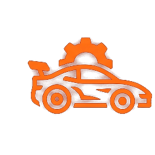
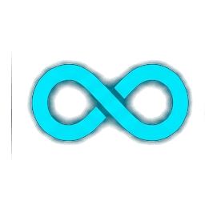
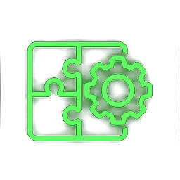
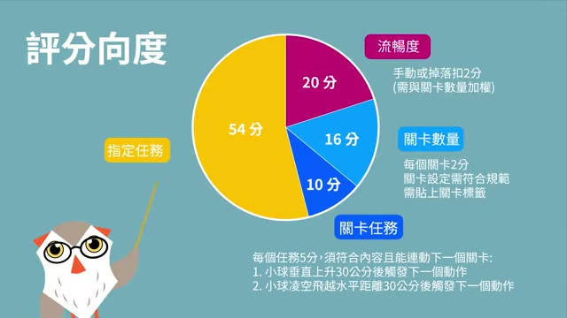
🔑 滿分空間核心：彈力車須沿下排 H ➔ G ➔ F 底盤前進，故下排 F、G、H 區採「離地 18cm 架高天橋」——上層跑關卡、底層當淨空隧道跑道！
7331-W11-N1R
要在 F、G、H 架設天橋並在 G/C 區搭出超過 45cm 的高塔，絕不能搖晃！播放清單《梁柱 1～3》三大必學結構：
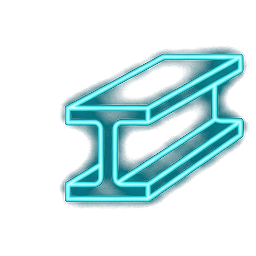
解決「單向一推就散」與「插錯格」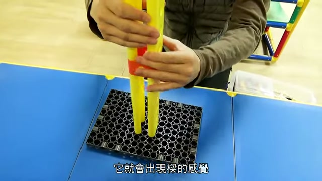
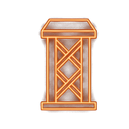
G 區 30cm 電梯與 C 區高塔必用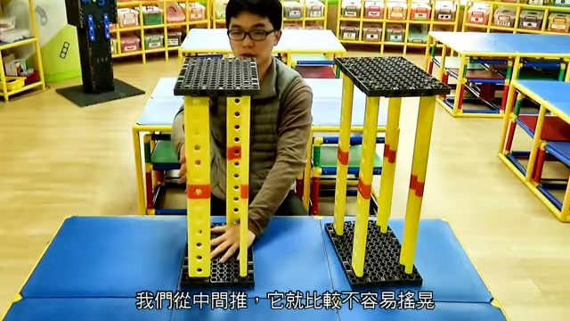
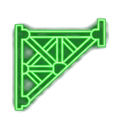
F·G·H 架高天橋跨接首選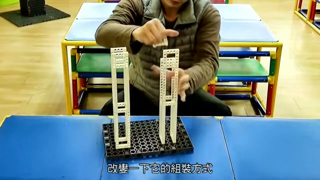
流暢度 20 分的第一道防線：
看懂每一關的「3D 立體結構圖」與「揚揚老師實拍示範」，照著組裝零失誤！
7413-W10-K2W *C-5孔長條II-白 ×5、7026-W10-Q2W *C-3孔長條II-白 ×5、7061-W10-C1R *C-長結合鍵-紅 ×5、7413-W10-I1W *C-5×10孔長方框II-白 ×1。5孔長條II-白 底部前端扣上 3孔長條II-白 成「L 型」——往後碰絕對不會倒，只能往前傾倒！7125-W10-B1S 20×30大底盤每隔 4 格插一顆長結合鍵-紅，復歸時骨牌背部貼緊紅鍵，3 秒排好且間距 100% 一致！5×10孔長方框II-白，質量與重心加倍，直接撞開 B 區單擺插銷！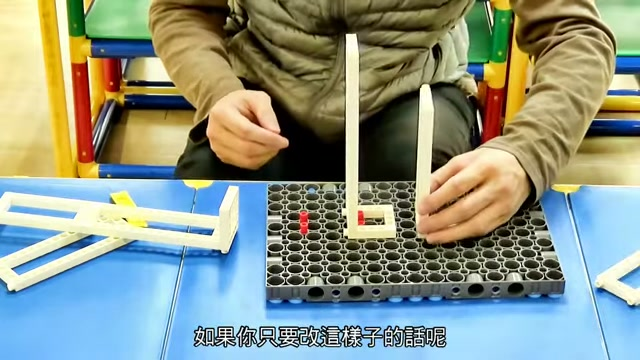
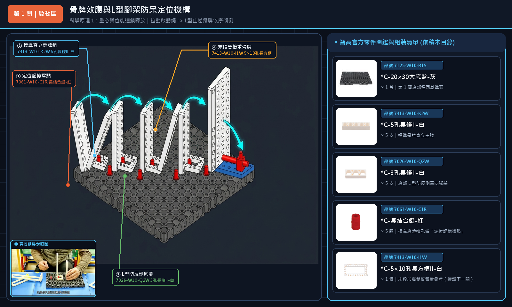
7413-W10-Z1W *C-15孔超長條-白 ×4、7413-W10-P1W *C-11孔長條-白 ×1、7026-W10-W5Y *C-60T齒輪-黃 ×2、7413-W10-L1D *C-100mmⅢ軸-黑 ×2、3620-W10-A1D *C-軸固定鍵-黑 ×4。15孔超長條-白 在 B 區搭設 32cm 高門型架（中段轉向 90° 交錯防晃），頂端穿入 100mmⅢ軸-黑。11孔長條-白 當剛性連桿擺臂（不偏擺！），底部用黑軸與 軸固定鍵-黑 對稱夾緊 2 顆 60T齒輪-黃 當重錘。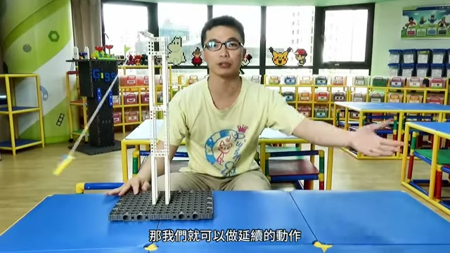
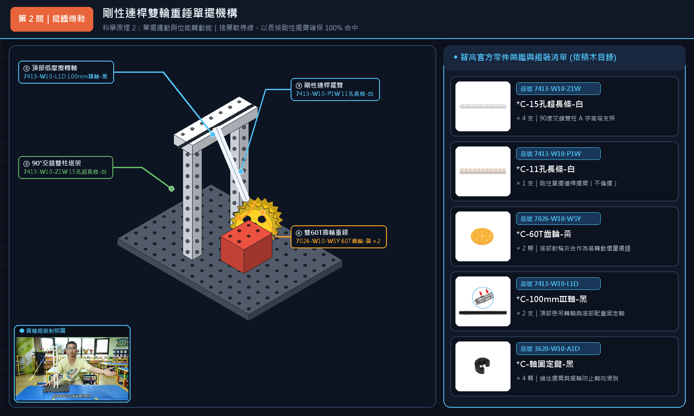
7413-W10-J1W *C-5×15孔長方框-白 ×2、7413-W10-P1W *C-11孔長條-白 ×2、7413-W10-K2W *C-5孔長條II-白 ×4、7026-W10-H1R *C-自轉軸鍵-紅 ×6、7026-W10-I1SK *C-底盤結合器-灰 ×8。底盤結合器-灰 將 5×15孔長方框-白 鎖在 F 區底盤前後邊緣，底層中央留出 20cm 寬彈力車淨空隧道！自轉軸鍵-紅 裝上 11孔長條-白 作為一類槓桿橫梁。5孔長條II-白 剪刀連桿 ➔ 拔開隔壁 G 區棘輪的止逆爪！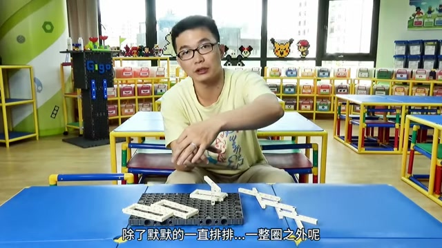
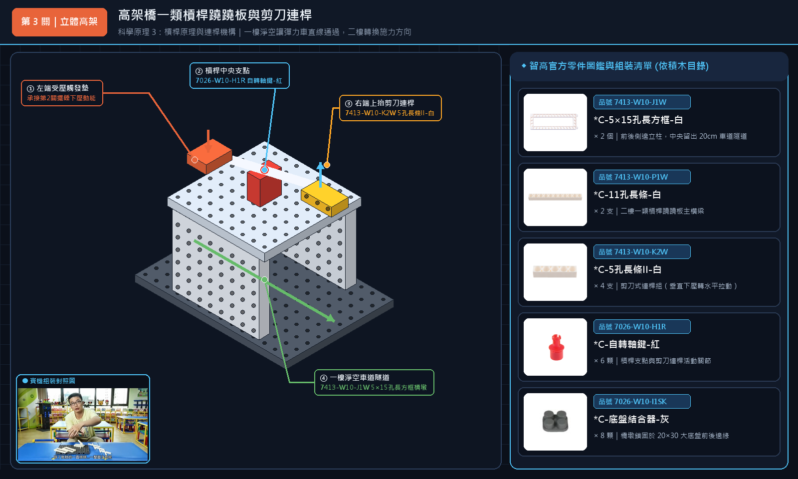
第 4 關（棘輪捲線電梯）➔ 第 5 關（重力加速跳台）➔ 第 6～8 關（護欄軌道、向心力圓周、反作用力推桿）
逐關 3D 立體機關結構完整拆解！
7413-W10-Z1W *C-15孔超長條-白 ×6、7900-W10-H1SK *C-捲線器-灰 ×1、7344-W10-O1Y *C-OD53mm滑輪-黃 ×2、7026-W10-D2R *C-20T齒輪-紅 ×1、7330-W11-M1B *A-40mm圓球-藍 ×1。15孔超長條-白 組成的 H 型高塔頂端橫軸上，將 20T齒輪-紅（棘輪）、捲線器-灰 與 OD53mm滑輪-黃 同軸裝設。40mm圓球-藍。40mm圓球-藍 垂直拉升 30cm（完全符合 ≥20cm 任務規定！），至塔頂滾入 C 區跳台！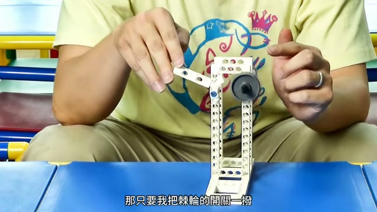
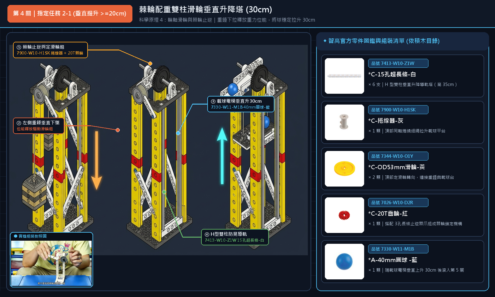
7330-W11-K1Y *A-6孔直線軌道-黃 ×2、7330-W11-N1Y *A-3孔斜坡軌道-黃 ×1、7026-W10-Q2W *C-3孔長條II-白 ×2、7413-W10-I1W *C-5×10孔長方框II-白 ×2、7330-W11-M1B *A-40mm圓球-藍 ×1。6孔直線軌道-黃 陡坡，將重力位能 U = mgh 全數轉為高速動能。3孔斜坡軌道-黃 並用 3孔長條II-白 墊高鎖死 18° 發射仰角。40mm圓球-藍 高速飛出跳台，在空中劃出拋物線無支撐飛越 28cm 水平跨距（超越 ≥20cm 規定），落入 D 區由 5×10孔長方框II-白 圍成的寬口接球籃！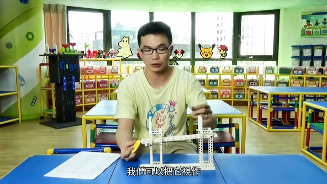
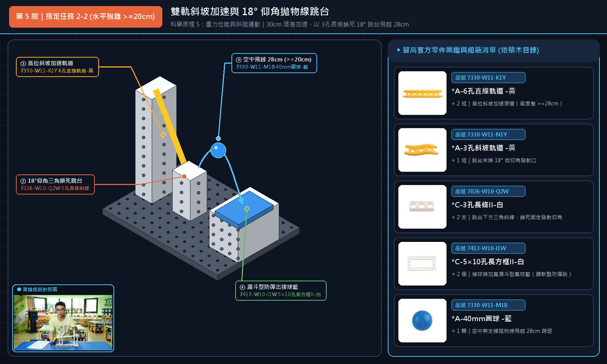
7413-W10-Z1W *C-15孔超長條-白 ×2、7413-W10-P1W *C-11孔長條-白 ×2、7331-W10-H1P *A-直線軌道擋板-紫 ×2、7413-W10-K2W *C-5孔長條II-白 ×4、7061-W10-C1R *C-長結合鍵-紅 ×8。5孔長條II-白 做高低差支撐柱，平行鋪設 2 支 15孔超長條-白 雙軌滑道。長結合鍵-紅 在滑道左右兩側加高一層 11孔長條-白 與 直線軌道擋板-紫！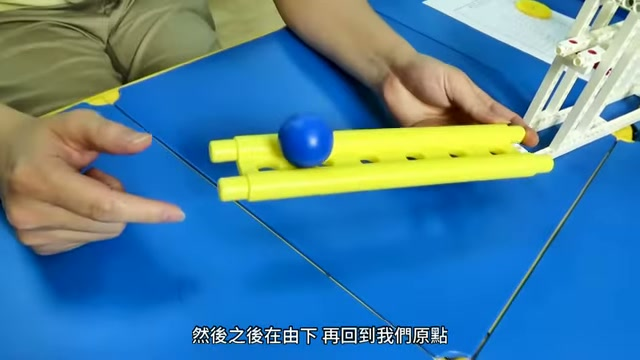
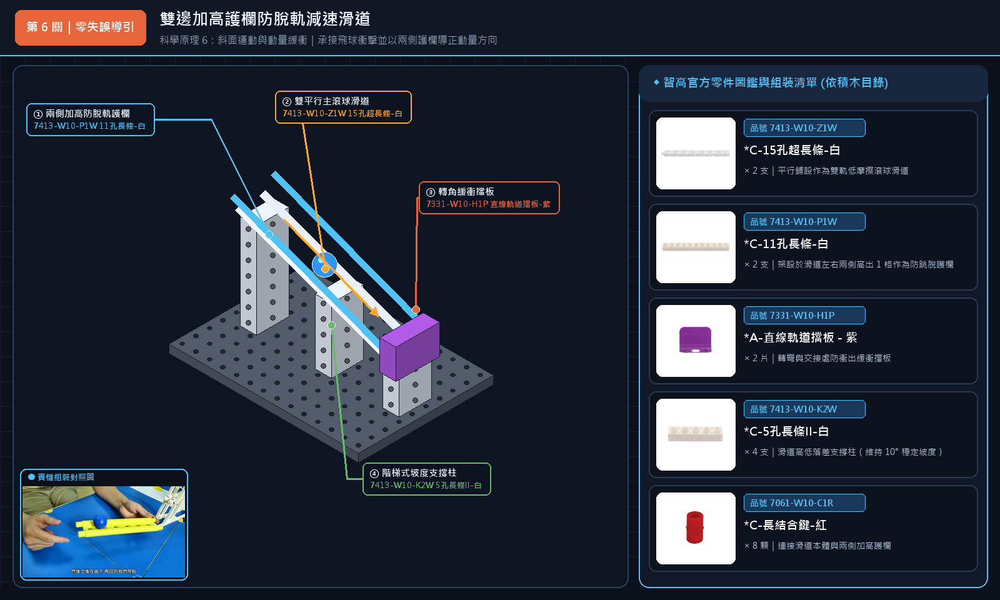
7413-W10-Z1W *C-15孔超長條-白 ×2、7026-W10-W5Y *C-60T齒輪-黃 ×1、7410-W10-B1S *C-繩索固定鍵 ×2、7026-W10-Q2W *C-3孔長條II-白 ×2、7125-W10-A1SK *C-8×12底盤-灰 ×1。15孔超長條-白 立起 35cm 獨立單柱，頂端用 繩索固定鍵 綁牢細繩並懸掛 60T齒輪-黃，擱置於 3孔長條II-白 高處停駐台。60T齒輪-黃 推落停駐台 ➔ 齒輪受繩索向心力牽引，繞著中心單柱做螺旋圓周運動旋轉而下！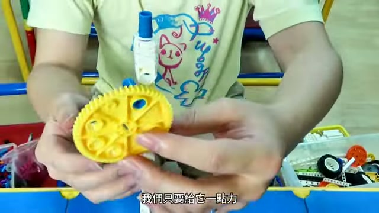
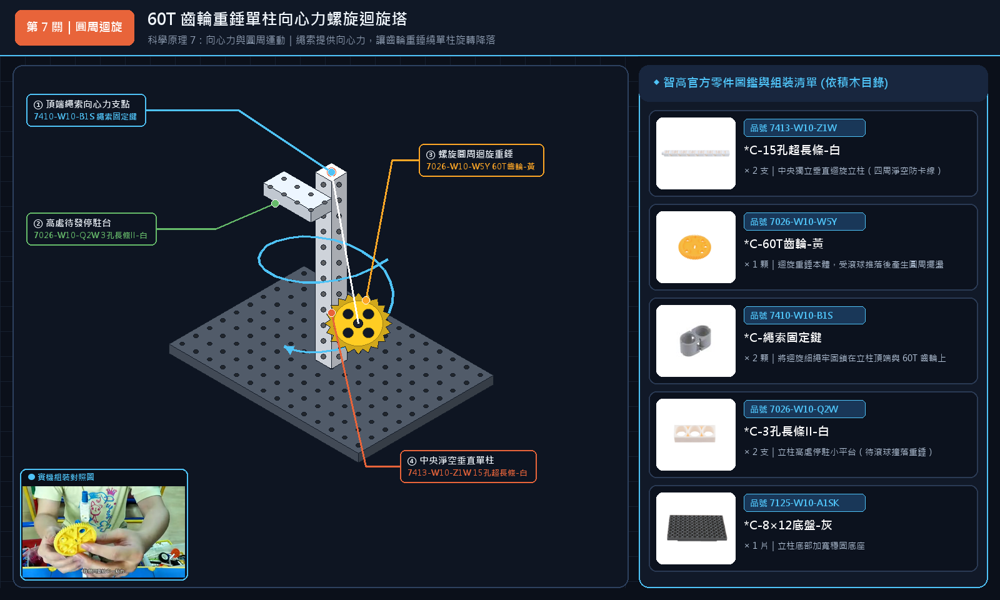
7413-W10-P1W *C-11孔長條-白 ×2、7413-W10-K2W *C-5孔長條II-白 ×4、7026-W10-D2R *C-20T齒輪-紅 ×2、7026-W10-H1R *C-自轉軸鍵-紅 ×4、7061-W10-C1R *C-長結合鍵-紅 ×4。20T齒輪-紅 當滾輪，上方承載 11孔長條-白 水平滑動推桿。11孔長條-白 瞬間向右滑出！5孔長條II-白 與 自轉軸鍵-紅 組成的車尾解鎖卡榫——完美達成「第 8 關自動觸發車體啟動（+2分）」！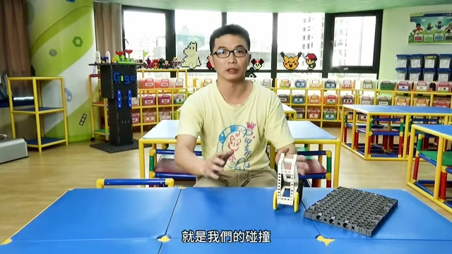
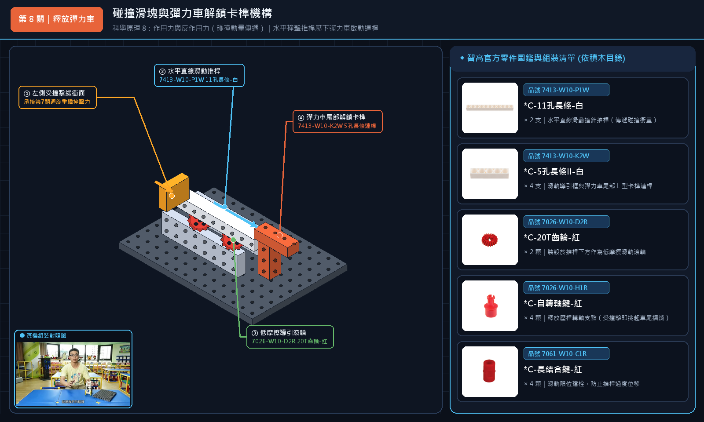
| 關卡與分區 | 主申報科學概念（8種不重複） | 第二雙重保底概念（防爭議備援） | 對應播放清單技巧 |
|---|---|---|---|
| 第 1 關 (A區) | 1. 重心或骨牌 | 慣性定律 | 小紅栓位置記憶點＋L型底座 |
| 第 2 關 (B區) | 2. 單擺 | 力與加速度或重力位能 | A字雙柱高架擺錘跨排打擊 |
| 第 3 關 (F區天橋) | 3. 槓桿 | 連桿 | 第一類蹺蹺板槓桿＋18cm天橋 |
| 第 4 關 (G區天橋) | 4. 棘輪 ★上升30cm | 輪軸 / 滑輪裝置 | 棘輪止動爪＋重物捲線器拉升 |
| 第 5 關 (C➔D區) | 5. 力與加速度或重力位能 ★飛越30cm | 斜面 / 慣性定律 | 高架斜坡加速＋三孔長條調仰角 |
| 第 6 關 (D區) | 6. 軌道 | 摩擦力 | 雙軌加裝隔板護欄防彈珠跳出 |
| 第 7 關 (E區) | 7. 向心力及圓周運動 | 單擺 / 重力位能 | 高柱綁線懸吊齒輪繞柱旋轉下滑 |
| 第 8 關 (H區後側) | 8. 作用力與反作用力 | 慣性定律 / 連桿 | 碰撞反推滑桿自動觸發預備區 |
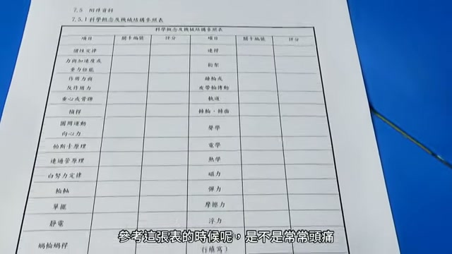
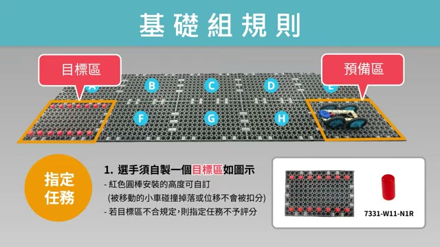
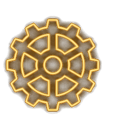
車體與 40T 藍色齒輪皆須「水平放置」於預備區！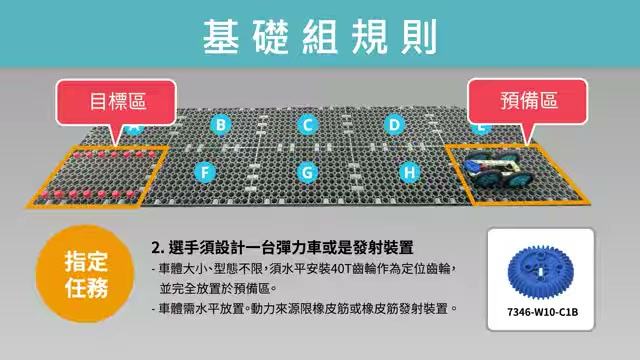
7346-W10-C1B *C-40T齒輪-藍 ×1、7331-W11-N1R *A-30mm圓棒-紅 ×12、7407-W10-A1D *C-OD60x25mm橡膠輪胎-黑 ×4（配 7407-W10-B1S 輪框）、3569-W10-D1S1 *C-20T傘齒 ×2、R10-05 *C-100mm橡皮筋-白 ×2、7900-W10-H1SK *C-捲線器-灰 ×1。3569-W10-D1S1 20T傘齒轉 90 度驅動後輪軸，使車寬縮減至 11cm（紅棒通道寬 22cm，兩側各留 5.5cm 安全邊距，絕不擦撞紅棒！）。R10-05 100mm橡皮筋拉動、配合 7900-W10-H1SK 捲線器纏繞 108cm 定距細繩；到達目標區第 6 虛線區時細繩拉盡反扣鎖死後輪，分毫不差停在滿分區！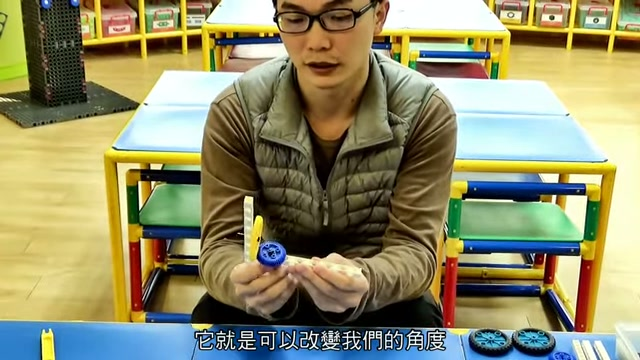
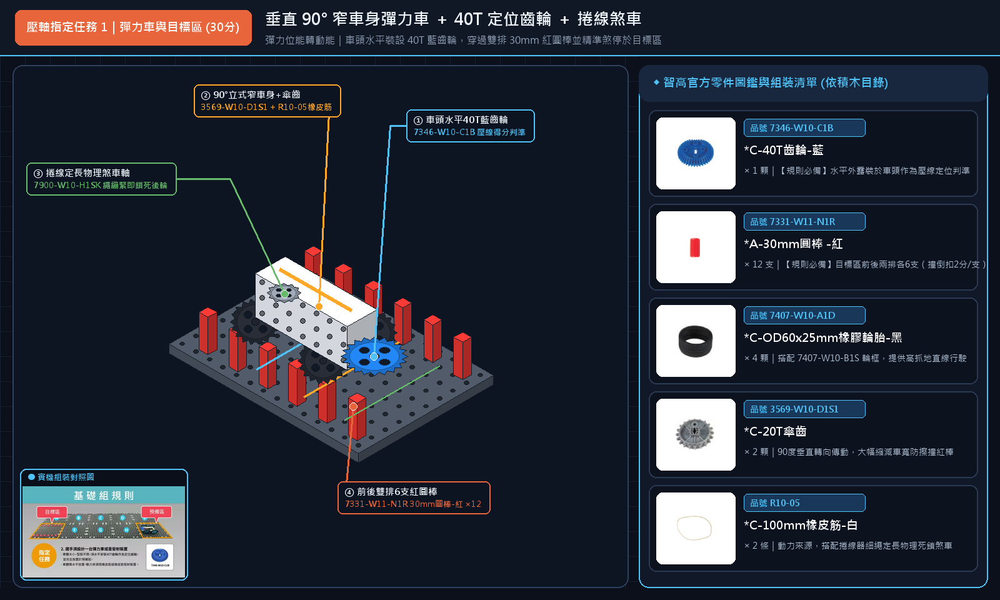
3569-W10-D1S1 20T傘齒垂直傳導後，車身僅寬 11cm，直線穿越 H·G·F 天橋隧道與紅棒陣列毫無壓力！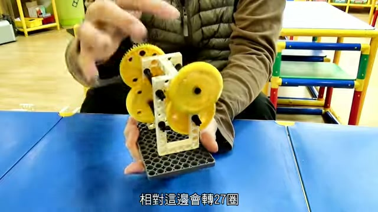
7407-W10-A1D 寬版高摩擦橡膠胎，並在車頭底部加裝配重防止起步翹頭。7026-W10-W5Y 60T 黃齒輪帶動 20T 紅齒輪（1:3 增速延距），讓橡皮筋轉 2 圈即可帶動車輪轉 6 圈跑完 108cm！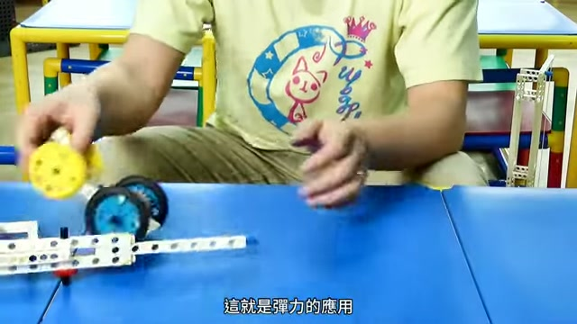
7346-W10-C1B 40T 齒輪完全進入目標區得 8 分，並依 6 對紅棒虛線格擇優判斷加分（+0.5 ～ +3 分）。8-1=7分 或 6分！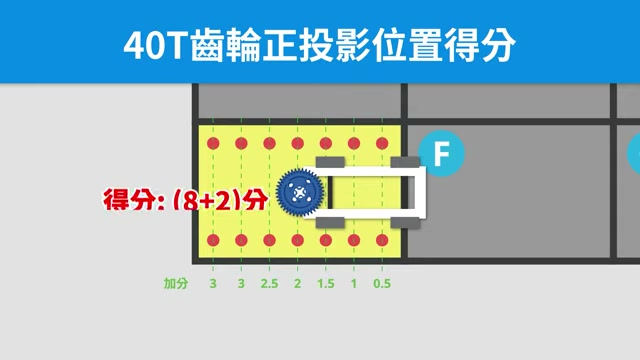
| 校準模式 | 橡皮筋配置建議（目錄品號） | 後輪纏繞圈數（60T:20T 基準） | 預估行駛距離（預備區起算） | 40T 齒輪停駐目標與單次得分 |
|---|---|---|---|---|
| 保守穩健檔（第 1 次保底） | 雙股 R10-05 100mm橡皮筋-白 並聯 |
5.5 圈（定距棉線 102cm） | 約 102 ～ 105 cm | 目標區第 4～5 虛線區（8 + 2.0~2.5 + 7 = 17.0～17.5 分） |
| 滿分衝刺檔（第 2、3 次） | 雙股 R10-05 100mm橡皮筋-白（每次換新防疲乏） |
6.0 圈（定距棉線 108cm） | 約 107 ～ 110 cm（距左界留 4cm 裕度） | 目標區最深第 6 虛線區（8 + 3.0 + 7 = 18.0 分滿分！） |
依據《2026年智高零件目錄訂購單（台中市梧棲區中正國小）》精確對照——賽前按此表清點各關零件即可快速組裝：
| 零件圖鑑 | 官方品號 | 官方品名 | 系列 | 本作品應用關卡與結構功能 | 建議備料 |
|---|---|---|---|---|---|
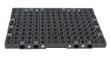 |
7125-W10-B1S |
*C-20×30大底盤-灰 | C系列 | 全場 2×5 拼接（150×40cm）比賽基準底盤（搭配 7125-W10-C1S 大底盤結合器） |
10 片 |
7413-W10-Z1W |
*C-15孔超長條-白 | C系列 | 第2關單擺雙柱塔、第4關30cm垂直升降H塔、第6關雙平行軌道、第7關向心力中心單柱 | 20 支 | |
7413-W10-I1W / J1W |
*C-5×10 / 5×15孔長方框-白 | C系列 | 第1關末段雙倍重骨牌、第3關天橋隧道立柱、第5關飛球接球漏斗籃 | 12 個 | |
7413-W10-K2W / Q2W |
*C-5孔長條II / 3孔長條II-白 | C系列 | 第1關L型骨牌組、第3關剪刀連桿、第5關18°跳台斜撐、第6關軌道柱、第8關解鎖卡榫 | 35 支 | |
7346-W10-C1B |
*C-40T齒輪-藍（指定必備） | C系列 | 【規則硬性指定】水平外露安裝於彈力車最前緣，作為目標區正投影計分判準 | 2 顆 | |
7331-W11-N1R |
*A-30mm圓棒-紅（指定必備） | A系列 | 【規則硬性指定】自製目標區前後兩排各插 6 支（共 12 支），構成 6 個加分虛線區 | 12 支 | |
7026-W10-W5Y / D2R |
*C-60T齒輪-黃 / 20T齒輪-紅 | C系列 | 第2關雙60T擺錘、第4關20T棘輪、第7關60T迴旋重錘、第8關滑軌滾輪、彈力車1:3增速傳動 | 各 6 顆 | |
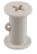 |
7900-W10-H1SK / O1Y |
*C-捲線器-灰 / OD53mm滑輪-黃 | C系列 | 第4關垂直拉升 30cm 電梯捲線組、彈力車 108cm 定長物理死鎖煞車軸 | 各 3 顆 |
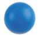 |
7330-W11-M1B / K1Y |
*A-40mm圓球-藍 / 6孔直線軌道-黃 | A系列 | 第4關垂直提升球體、第5關俯衝斜坡加速與 28cm 拋物線凌空飛越任務球 | 球4顆/軌4組 |
👉 拖曳下方滑桿，比較「一般失誤車（擦撞紅棒＋衝過頭壓左界）」與「中正滿分定距車（窄車體零碰撞＋精準停駐 +3 分區）」的三次總分差異：
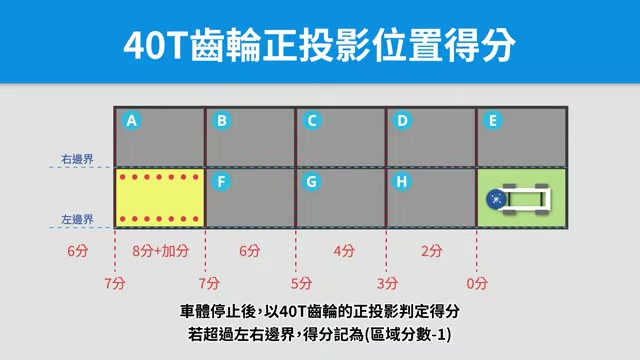
預祝中正國小機關王代表隊旗開得勝 · 勇奪滿分 100 分！